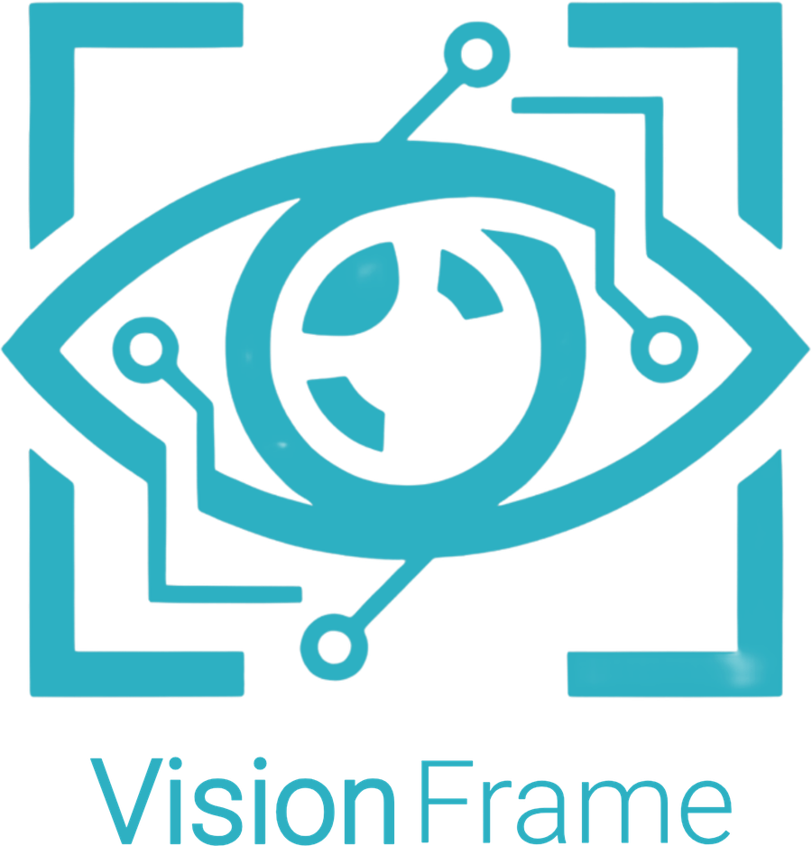
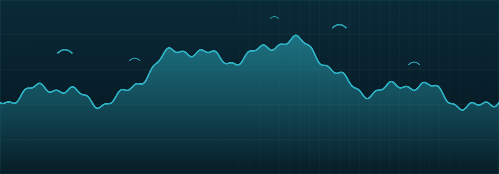

SonarDepth
Opens RSD sonar recordings on a Windows computer, so a day on the water can be reviewed properly at the kitchen table. One-time purchase.

Sole trader · Sweden
Visionframe builds small desktop applications that open the files marine electronics keep to themselves. One person, one product at a time, sold outright and supported directly.

Illustration only. Bottom profile drawn from a synthetic trace.
Visionframe is run by Peter Tötterman, a registered sole trader in Sweden. I write desktop applications on my own, release them when they are finished, and answer the support mail myself. There is no team behind the name and no venture funding, which is the point: the tools stay small, stay specific, and stay maintained.
Everything sold here is my own work. Software is delivered as a download and unlocked with a license key issued at purchase — no account, no subscription, no telemetry.
Opens RSD sonar recordings on a Windows computer, so a day on the water can be reviewed properly at the kitchen table. One-time purchase.
Not announced. New tools appear when a real gap turns up in the same territory: desktop utilities for file formats that hardware makers keep locked to their own screens.
Questions before buying, license trouble, or a bug to report: write to peter.totterman@visionframe.se. Replies usually come within two working days.
Visionframe · Sole trader registered in Sweden · LinkedIn